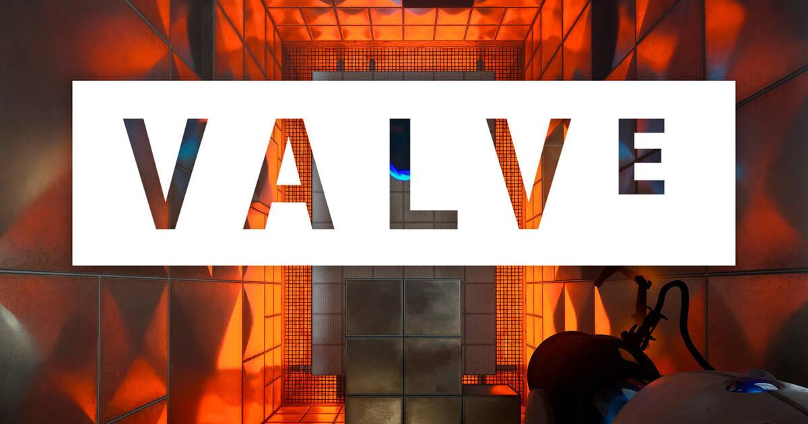
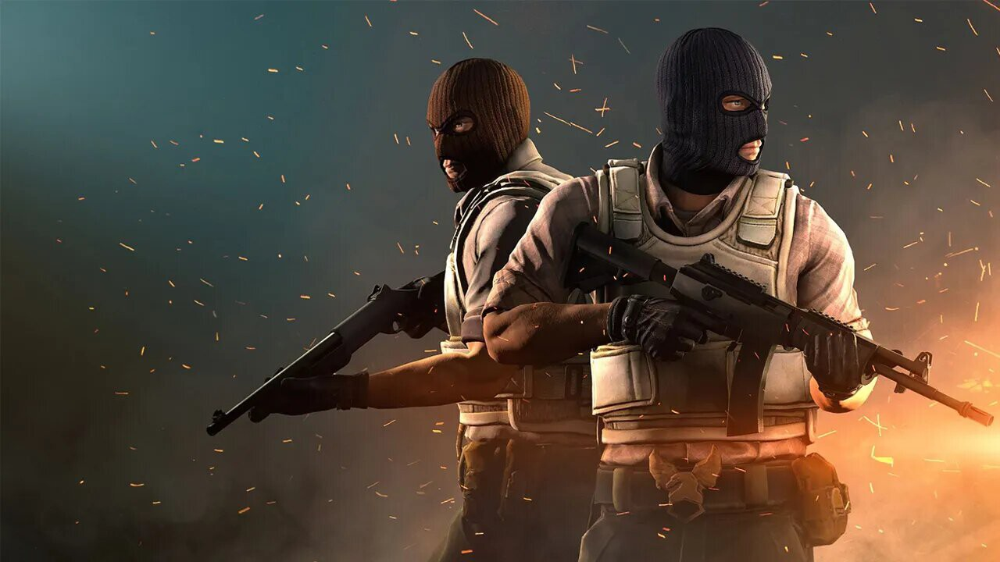

Valve Corporation, también conocido como Valve Software, es una empresa estadounidense desarrolladora de videojuegos. Se hizo mundialmente famosa por su primer juego, Half-Life y por una modificación de este, Counter-Strike. Otros de sus logros más famosos son la creación del motor de videojuego Source, utilizado en gran parte de sus videojuegos, incluyendo Half-Life 2, Portal, Team Fortress 2, Left 4 Dead, Left 4 Dead 2 y Dota 2 y la creación de la plataforma digital de videojuegos Steam.
Counter-Strike (conocido públicamente como Counter Strike 1.6) es un videojuego de disparos en primera persona multijugador (ya sea en LAN o en línea) desarrollado por Valve para Microsoft Windows. Es una modificación completa del juego Half-Life.
